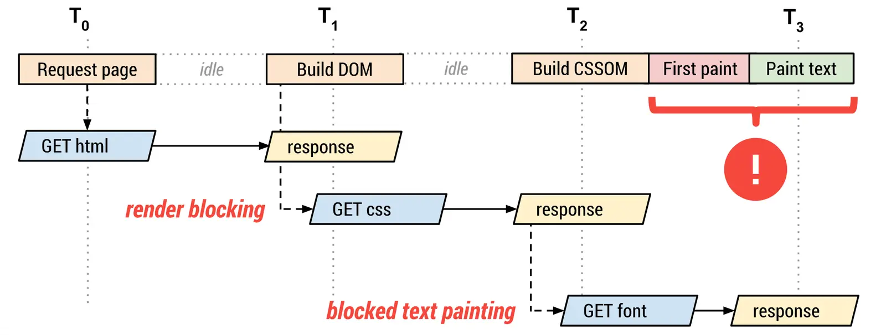

短答
当第一段文字在字体文件被确定之前无法绘制时，这种字体就在关键路径上。
这条路径从 HTML 到点名字体的样式表，再到字体文件。插在其中的每一个多余字体族都会拉长链条。SEO 健康问的是首屏真正需要哪一种字体，以及哪些是因为品牌套件被贴进头部才加上的。
定义
关键路径是加载概念，不是设计批评。如果第一段文字已有可读的后备，有特色的展示字体仍然可以用在首屏以下或首次绘制之后。图显示的是链条。它不是对 Mika、某位客户或本营销站的测量。
渲染对爬虫意味着什么变化
在从 HTML 到字体文件的链条上只保留首屏用的那种字体。
把字体子集化到模板使用的字符，可以让文件更小，当文件在链条上时这很要紧。子集化不是用五个字体族去阻挡渲染的借口。只为画几个箭头而存在的图标字体，特别不适合留在这条路径上；这些箭头用内联 SVG 并不会拖住文档。

要检查什么
- 第一段文字之前请求的字体族
- 只用来画几个箭头的图标字体
- 只在其他模板使用却被全局加载的字体
- 一条产品 URL 的头部标记
- 没有被隐藏的后备文字
一个结构示例
全局样式表在产品标题能显示之前请求了正文字体、窄字体和图标字体。标题只需要正文字体。健康上的改动是从产品模板的头部去掉另外两种。使用窄字体的活动布局可以在自己的页面上请求它。
它不声称什么
缩短字体链条不保证排名或引用。
Mika Visibility 把它归到哪里
Mika Visibility 把渲染当作 SEO 健康问题：当模板依赖 JavaScript 时，重要 HTML 能否在有脚本和无脚本两种情况下被获取并比较。这种比较不是 GEO 审计，也不是市场覆盖计划。发现要附在样例 URL 上。模板改完之后的再审计，用来确认修复。
路径图标出 HTML、CSS 和字体文件，因此不必用秒表也能看见链条。
常见问题
字体什么时候在关键路径上？
当第一段文字在字体文件被确定之前无法绘制时，这种字体就在关键路径上。
链条上应该留下什么？
在从 HTML 到字体文件的链条上只保留首屏用的那种字体。
更短的字体链条能保证排名吗？
缩短字体链条不保证排名或引用。
下一步
做一次结构化的 SEO + GEO 审计，查看健康发现、增长缺口和可以执行的蓝图。
更清晰的实体、答案、证据和上下文，会让页面更容易被理解与引用。任何回答产品中的结果都不作保证。